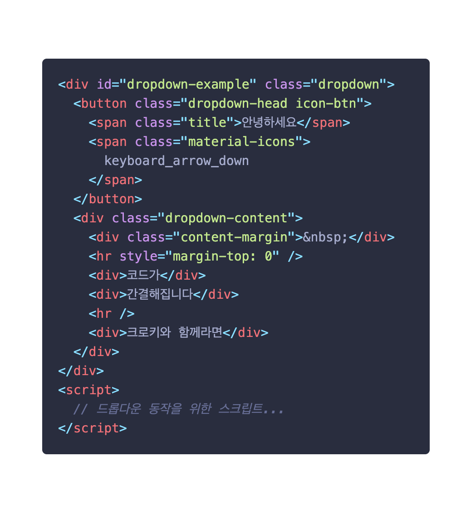
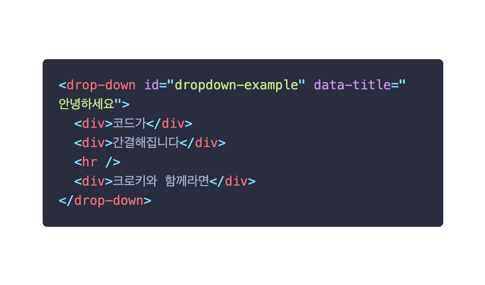
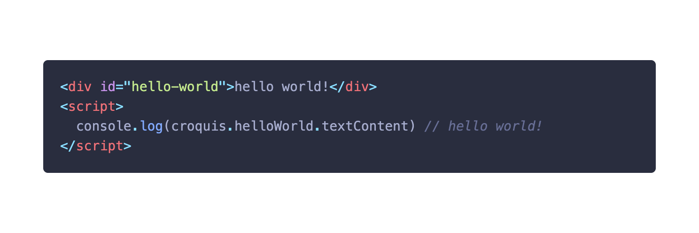

당신의 도화지를
채우는 가장 쉬운 방법


놀랍게도 이 둘은 완전히 동일한 결과를 화면에 출력합니다.

프론트엔드 개발은 쉽지만 어렵습니다. 초보자가 예쁘고 멋진 웹페이지를
혼자만의 힘으로 제작하기에는 많은 어려움이 있죠. 크로키는 그런
초보자들에게 집중했습니다.
사실, 프론트엔드 개발에 익숙해져도 귀찮은 일들은 늘 존재합니다. 예를
들어, 드롭다운 메뉴 하나를 만들기 위해서는 꽤 많은 양의 코드가
필요하죠. 하지만 크로키와 함께라면 정말 딱 필요한 내용들만 채우면
됩니다. 또한, 비슷한 형태의 요소를 어디서든 빠르게 만들어낼 수 있죠.
크로키와 함께하는 당신은 더이상 특정 요소를 선택하기 위해 변수를
선언하고, DOM 접근 메소드를 사용하지 않아도 됩니다. 크로키는 요소들의
id값을 바탕으로 자바스크립트에서 당신이 바로 가져다 쓸 수 있도록
요소들을 준비해놓습니다. 당신은 그냥 등록된 요소를 가져다 사용하면
됩니다.